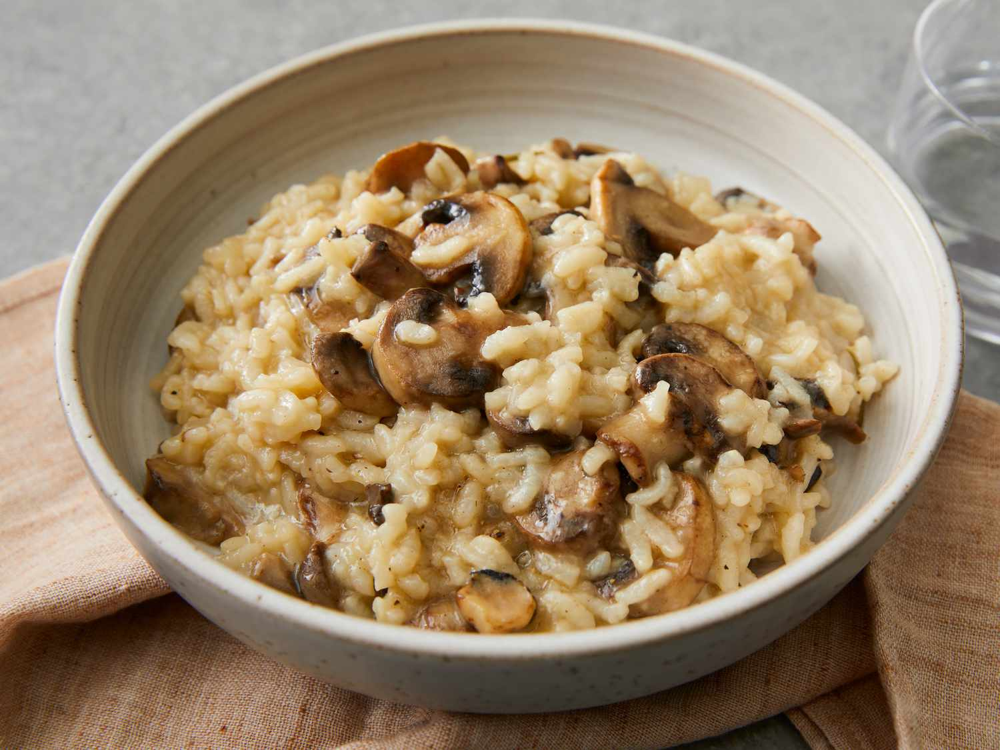

Risotto

Risoto é sempre uma boa pedida para reunir os amigos. O único problema é ficar com a barriga no fogão e não poder curtir os convidados. Porém essa receita traz um truque de restaurante, que ensina a preparar o arroz de véspera. Na hora de servir, a finalização é feita em apenas 5 minutos.
Para o Caldo
Ingredientes
- 2 cenouras
- 2 talos de salsão (as folhas de 1)
- 1 cebola grande
- 3 litros de água
- 2 folhas de louro
- 3 cravos-da-índia
- 5 grãos de pimenta-do-reino
Modo de Preparo
- Lave bem todos os legumes. Corte a cenoura em fatias grossas. A cebola e o salsão em pedaços médios.
- Numa panela, junte os legumes, as folhas de salsão e os temperos. Coloque a água e leve ao fogo alto. Quando ferver, abaixe o fogo e deixe cozinhar por 30 minutos.
- Desligue o fogo e, com uma peneira fina, coe o caldo. Reserve.
Para o Risoto
Ingredientes
- 3 xícaras (chá) de arroz para risoto
- 200 g de cogumelo shiitake
- 200 g de cogumelo shimeji
- 200 g de cogumelo-de-paris
- 9 xícaras (chá) do caldo de legumes
- 1 cebola
- 2 colheres (sopa) de azeite
- 1½ xícara (chá) de vinho branco
- ¼ de xícara (chá) de salsinha
- 1 dente de alho
- sal e pimenta-do-reino moída na hora a gosto
Modo de Preparo
- Numa panela, coloque as 9 xícaras de caldo coado e leve ao fogo alto. Quando ferver, abaixe o fogo.
- Descasque e pique a cebola em cubos pequenos.
- Numa outra panela, coloque o azeite, a cebola, tempere com sal e leve ao fogo baixo. Quando a cebola ficar transparente, aumente o fogo, coloque o arroz e refogue por aproximadamente 2 minutos - todos os grãos de arroz devem ficar com uma camadinha de azeite. Coloque o vinho e mexa vigorosamente até evaporar.
- Junte 6 xícaras de caldo e mexa até secar. Reserve, na geladeira, as outras 3 xícaras para usar quando for finalizar o risoto.
- Em duas assadeiras grandes, espalhe o arroz em camadas fininhas, espere esfriar um pouco e leve à geladeira - o arroz dura até 3 dias na geladeira.
- Na hora de servir o risoto, lave, seque e pique a salsinha Descasque e pique fininho o dente de alho. Corte o shimeji em arvorezinhas e o shitake e o cogumelo-de-paris em fatias.
- Leve uma frigideira grande ao fogo até esquentar bastante. Coloque uma colher de azeite e adicione o shitake, aguarde dourar, tempere com sal, pimenta-do-reino a gosto e transfira para uma tigela. Repita o processo com o shimeji, reserve. Coloque o cogumelo-de-paris, junte o alho picado e espere dourar, coloque a salsinha e junte aos outros cogumelos.
- Numa panela, coloque as 3 xícaras restantes de caldo e leve ao fogo médio para aquecer.
- Assim que o caldo ferver, coloque o risoto pré-cozido em uma panela, adicione os cogumelos e metade do caldo. Leve ao fogo alto e mexa bem.
- Verifique o ponto do risoto, ele deve ficar úmido e durinho no meio, al dente. Se ainda não estiver no ponto de risoto, adicione mais caldo e deixe secar. Acerte o tempero e sirva imediatamente.